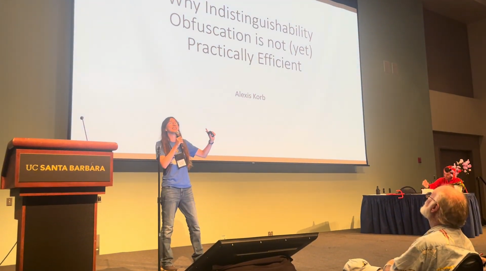
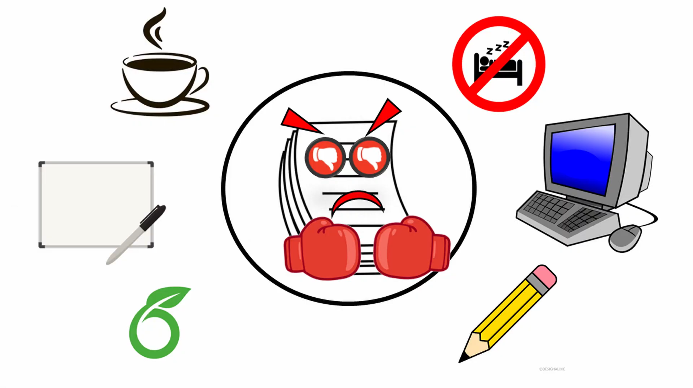
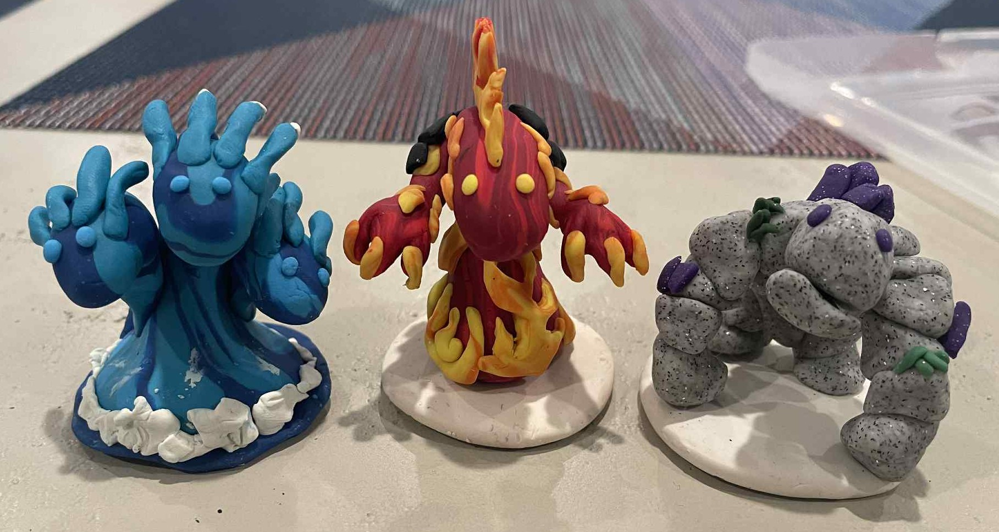
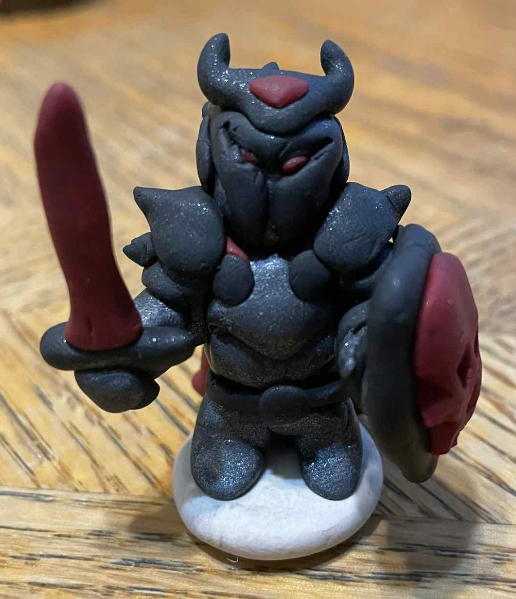
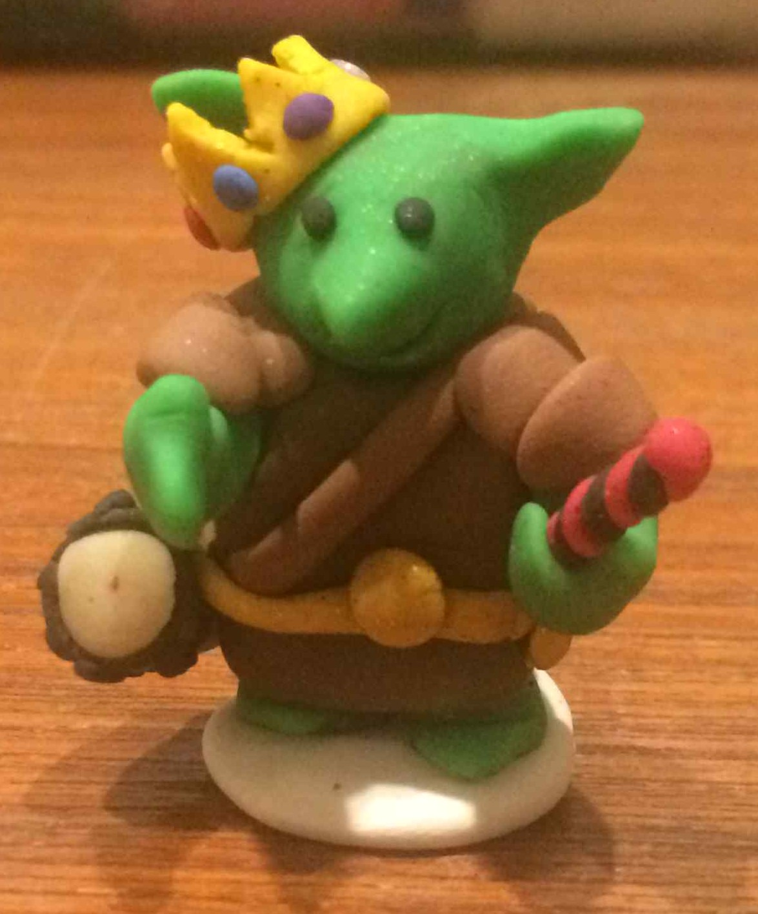
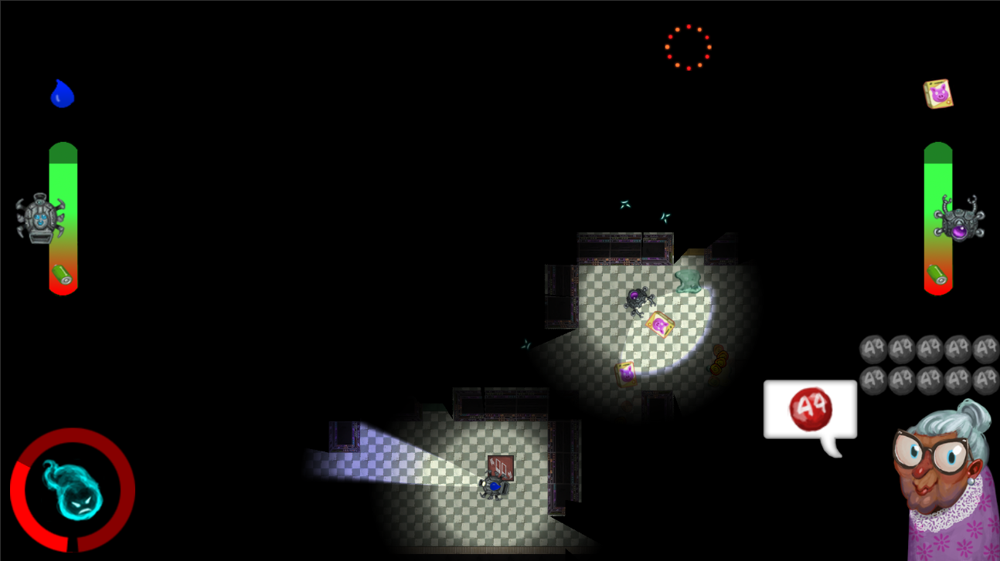

Song Parodies
I have made several humorous cryptography- and academia-themed musical parodies for the Crypto Rump Session.
Why Indistinguishability Obfuscation is not (yet) Practically Efficient
 🎥Live Recording 🎥Crypto Recording
Lyrics by: Alexis Korb and Allison Bishop
Performed with: Eli Jaffe, Surya Mathialagan, Rohit Nema, Amit Sahai
Parody of: "Supercalifragilisticexpialidocious" from Mary Poppins
I'm Reject
 🎥Music Video 🎥Live Recording 🎥Crypto Recording
Lyrics by: Alexis Korb and Allison Bishop
Performed with: Eli Goldin, Eysa Lee, Ning Luo, Rohit Nema, Lisa Oakley,
Mark Schultz-Wu, Adam Suhl, Eran Tromer, Qiuhong Anna Wei, Cathie Yun
Parody of: "I'm Just Ken" from the Barbie movie.
Use Big O
Unfortunately, there are no good video recordings of this performance. Due to technical difficulties, the Crypto recording is missing the backing music as well as the introductory portion of the talk.
Lyrics by: Alexis Korb
Parody of: "Let It Go" from Frozen.
Miniatures
In my free time, I enjoy lots of nerdy hobbies such as Dungeons and Dragons, reading, video games, and board games. I also make miniatures for Dungeons and Dragons out of polymer clay.
Adventuring parties:
The elemental squad so far:
A good-aligned Death Knight
(it's a long story) that we lovingly named Maximum Bloodbath:

A goblin NPC named Grax
that the party adopted
just because:

Video Games
Before deciding to pursue a PhD, I wanted to be a video game developer and participated in several game jams.
Ghost in the Machine
 ▶️Play Game 🔗Ludum Dare Page 🔗Github
Art: Matt Hansen
Programming: Alexis Korb
Programming: Brian Macintosh
Level Design/Art: Minnie Wu
Sound Design: Justin Britch
(Music used from NGXmusical)